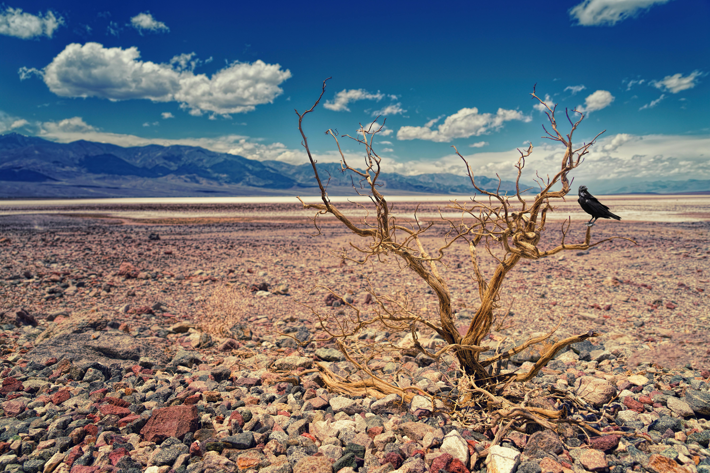
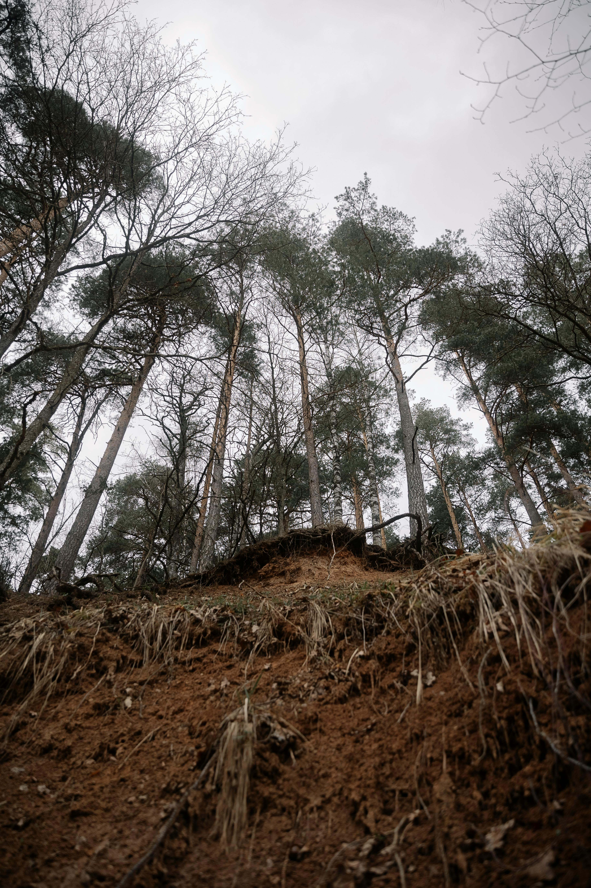
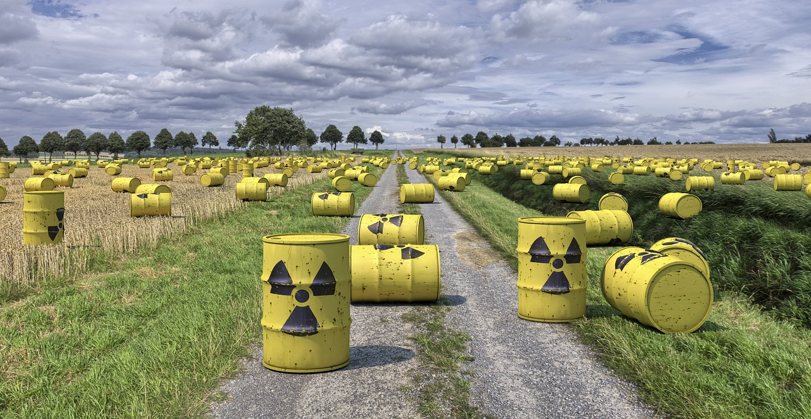

Thirsty Earth - The Drought Crisis
The journey begins amidst parched landscapes and cracked earth as we confront the
devastating
effects of prolonged
drought. Witness the struggle for survival as communities and ecosystems alike face dwindling
water
resources,
agricultural losses, and heightened vulnerability to natural disasters.


Suffocating Skies - Air Pollution from Industrialization
Venture into urban landscapes cloaked in a haze of pollution, where factory
smokestacks belch toxins
into the air. Delve
into the health consequences of air pollution, from respiratory ailments to cardiovascular
diseases,
and the urgent need
for cleaner energy solutions and stricter regulations.
Shattered Ground - The Peril of Landslides
Traverse rugged terrains scarred by the aftermath of landslides, triggered by
deforestation,
improper land use, and
extreme weather events. Explore the human and environmental toll of landslides, from loss of
life
and property to
disruption of ecosystems and infrastructure.


Inferno Unleashed - Battling Wildfires
Enter the heart of the wildfire crisis, where forests ablaze consume precious
habitats, release
carbon emissions, and
threaten lives and livelihoods. Witness the heroic efforts of firefighters and communities as
they
confront the fury of
nature's flames and strive for forest resilience and fire prevention.
Toxic Legacy - Managing Nuclear Waste
Descend into the depths of nuclear waste storage facilities, where radioactive
materials pose a
long-term threat to
human health and the environment. Explore the challenges of nuclear waste disposal, containment,
and
decommissioning,
and the imperative of safeguarding future generations from nuclear hazards.

Vanishing Glaciers - The Melting Cryosphere
Embark on a journey to Earth's icy realms, where glaciers retreat at an alarming
pace, disrupting
water cycles, raising
sea levels, and amplifying climate change impacts worldwide. Witness the loss of glacial
landscapes
and the cascading
effects on ecosystems, freshwater supplies, and global climate systems.